Статистика обращений к star-poe.com.ua
Статистика обращений к star-poe.com.ua
Программа стартовала в пт. 31 мар 2023 15:33.
Анализ обращений к серверу с вс. 19 мар 2023 16:24 по пт. 31 мар 2023 06:22 (11,58 дней).
Статистика обращений к star-poe.com.uaПрограмма стартовала в пт. 31 мар 2023 15:33.
Анализ обращений к серверу с вс. 19 мар 2023 16:24 по пт. 31 мар 2023 06:22 (11,58 дней).
(Переход: Вверх | Основная Информация | Статистика по месяцам | Статистика по дням недели | Статистика по времени суток | Статистика по доменам | Статистика по организациям | Статистика по перенаправляющим ссылкам | Статистика отказов по ссылкам | Статистика по ссылающимся сайтам | Статистика по браузерам (подробная) | Статистика по браузерам (суммарная) | Статистика по операционным системам | Статистика по коду возврата | Статистика по размерам файлов | Статистика по типам файлов | Статистика по директориям | Статистика по запросам)
Запись в круглых скобках - данные за 7 дней до 31 мар 2023 15:33.
Успешных обращений: 1 041 (239)
Среднее кол. успешных обращений в день: 89 (34)
Успешных обращений к страницам: 144 (43)
Среднее кол. успешных обращений к страницам в день: 12 (6)
Неуспешных запросов: 1 878 (1)
Перенаправленных запросов: 113 (5)
Количество запрошенных файлов: 189 (2 027)
Количество обслуженных хостов: 224 (247)
Данных передано: 27,23 мегабайт (6,75 мегабайт)
Среднее кол. переданных данных в день: 2,35 мегабайт (987,15 килобайт)
(Переход: Вверх | Основная Информация | Статистика по месяцам | Статистика по дням недели | Статистика по времени суток | Статистика по доменам | Статистика по организациям | Статистика по перенаправляющим ссылкам | Статистика отказов по ссылкам | Статистика по ссылающимся сайтам | Статистика по браузерам (подробная) | Статистика по браузерам (суммарная) | Статистика по операционным системам | Статистика по коду возврата | Статистика по размерам файлов | Статистика по типам файлов | Статистика по директориям | Статистика по запросам)
Каждый символ ( ) отображает 4 обращений к страницам или около этого.
) отображает 4 обращений к страницам или около этого.
| месяц | запросы | страниц | |
|---|---|---|---|
| мар 2023 | 1041 | 144 |   |
Наибольшее количество обращений в мар 2023 (144 обращений к страницам).
(Переход: Вверх | Основная Информация | Статистика по месяцам | Статистика по дням недели | Статистика по времени суток | Статистика по доменам | Статистика по организациям | Статистика по перенаправляющим ссылкам | Статистика отказов по ссылкам | Статистика по ссылающимся сайтам | Статистика по браузерам (подробная) | Статистика по браузерам (суммарная) | Статистика по операционным системам | Статистика по коду возврата | Статистика по размерам файлов | Статистика по типам файлов | Статистика по директориям | Статистика по запросам)
Каждый символ () отображает 1 обращение к странице.
| день | запросы | страниц | |
|---|---|---|---|
| вс. | 67 | 13 |  |
| пн. | 299 | 36 | |
| вт. | 250 | 32 | |
| ср. | 222 | 33 | |
| чт. | 138 | 19 |   |
| пт. | 55 | 6 | |
| сб. | 10 | 5 | |
(Переход: Вверх | Основная Информация | Статистика по месяцам | Статистика по дням недели | Статистика по времени суток | Статистика по доменам | Статистика по организациям | Статистика по перенаправляющим ссылкам | Статистика отказов по ссылкам | Статистика по ссылающимся сайтам | Статистика по браузерам (подробная) | Статистика по браузерам (суммарная) | Статистика по операционным системам | Статистика по коду возврата | Статистика по размерам файлов | Статистика по типам файлов | Статистика по директориям | Статистика по запросам)
Каждый символ () отображает 1 обращение к странице.
| час | запросы | страниц | |
|---|---|---|---|
| 0 | 73 | 11 | |
| 1 | 8 | 3 | |
| 2 | 82 | 9 | |
| 3 | 19 | 2 | |
| 4 | 5 | 1 | |
| 5 | 16 | 5 | |
| 6 | 39 | 5 | |
| 7 | 7 | 3 | |
| 8 | 39 | 6 | |
| 9 | 35 | 2 | |
| 10 | 42 | 8 | |
| 11 | 10 | 5 | |
| 12 | 133 | 22 | |
| 13 | 227 | 17 | |
| 14 | 19 | 2 | |
| 15 | 1 | 0 | |
| 16 | 80 | 13 | |
| 17 | 55 | 6 | |
| 18 | 43 | 6 | |
| 19 | 34 | 3 | |
| 20 | 3 | 1 | |
| 21 | 21 | 1 | |
| 22 | 40 | 8 | |
| 23 | 10 | 5 | |
(Переход: Вверх | Основная Информация | Статистика по месяцам | Статистика по дням недели | Статистика по времени суток | Статистика по доменам | Статистика по организациям | Статистика по перенаправляющим ссылкам | Статистика отказов по ссылкам | Статистика по ссылающимся сайтам | Статистика по браузерам (подробная) | Статистика по браузерам (суммарная) | Статистика по операционным системам | Статистика по коду возврата | Статистика по размерам файлов | Статистика по типам файлов | Статистика по директориям | Статистика по запросам)
Список доменов, отсортировано по суммарному трафику.
| запросы | %байт | домен |
|---|---|---|
| 1041 | 100% | [нераспознанный IP-адрес] |
(Переход: Вверх | Основная Информация | Статистика по месяцам | Статистика по дням недели | Статистика по времени суток | Статистика по доменам | Статистика по организациям | Статистика по перенаправляющим ссылкам | Статистика отказов по ссылкам | Статистика по ссылающимся сайтам | Статистика по браузерам (подробная) | Статистика по браузерам (суммарная) | Статистика по операционным системам | Статистика по коду возврата | Статистика по размерам файлов | Статистика по типам файлов | Статистика по директориям | Статистика по запросам)
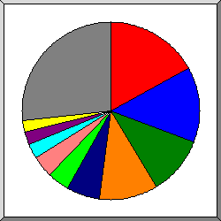
Поделено на сектора по количеству обращений.
 51
51
 66.249
66.249
 94
94
 106
106
 35
35
 58
58
 91
91
 205.169
205.169
 3
3
 150.109
150.109
 другое
другое
Показано первые 20 организаций - по количеству обращений, отсортировано по количеству обращений.
| запросы | %байт | организация |
|---|---|---|
| 113 | 0,21% | 51 |
| 87 | 9,41% | 66.249 |
| 85 | 9,75% | 94 |
| 68 | 3,02% | 106 |
| 62 | 7,22% | 35 |
| 59 | 6,50% | 58 |
| 52 | 5,33% | 91 |
| 43 | 3,94% | 205.169 |
| 43 | 4,24% | 3 |
| 34 | 4,34% | 150.109 |
| 32 | 4,06% | 44 |
| 31 | 3,87% | 134.249 |
| 31 | 3,84% | 46 |
| 29 | 4,11% | 124 |
| 28 | 3,15% | 65.154 |
| 28 | 3,15% | 38 |
| 20 | 1,18% | 117 |
| 17 | 1,42% | 152.39 |
| 16 | 1,86% | 168.151 |
| 16 | 0,75% | 152.32 |
| 147 | 18,65% | [не распознано: 63 организаций] |
(Переход: Вверх | Основная Информация | Статистика по месяцам | Статистика по дням недели | Статистика по времени суток | Статистика по доменам | Статистика по организациям | Статистика по перенаправляющим ссылкам | Статистика отказов по ссылкам | Статистика по ссылающимся сайтам | Статистика по браузерам (подробная) | Статистика по браузерам (суммарная) | Статистика по операционным системам | Статистика по коду возврата | Статистика по размерам файлов | Статистика по типам файлов | Статистика по директориям | Статистика по запросам)
Список ссылающихся URLей, отсортировано количество перенаправленных запросов.
| запросы | URL |
|---|---|
| 10 | http://star-poe.com.ua/ |
(Переход: Вверх | Основная Информация | Статистика по месяцам | Статистика по дням недели | Статистика по времени суток | Статистика по доменам | Статистика по организациям | Статистика по перенаправляющим ссылкам | Статистика отказов по ссылкам | Статистика по ссылающимся сайтам | Статистика по браузерам (подробная) | Статистика по браузерам (суммарная) | Статистика по операционным системам | Статистика по коду возврата | Статистика по размерам файлов | Статистика по типам файлов | Статистика по директориям | Статистика по запросам)
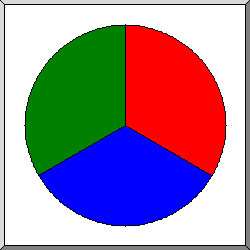
Поделено на сектора по количеству отказов.
http://star-poe.com.ua/phpmyadmin/index.php
http://star-poe.com.ua/PhpMyAdmin/index.php
http://star-poe.com.ua/pma/index.php
Список ссылающихся URLs, отсортировано по количеству отказов.
| запросы | URL |
|---|---|
| 6 | http://star-poe.com.ua/phpmyadmin/index.php |
| 6 | http://star-poe.com.ua/PhpMyAdmin/index.php |
| 6 | http://star-poe.com.ua/pma/index.php |
(Переход: Вверх | Основная Информация | Статистика по месяцам | Статистика по дням недели | Статистика по времени суток | Статистика по доменам | Статистика по организациям | Статистика по перенаправляющим ссылкам | Статистика отказов по ссылкам | Статистика по ссылающимся сайтам | Статистика по браузерам (подробная) | Статистика по браузерам (суммарная) | Статистика по операционным системам | Статистика по коду возврата | Статистика по размерам файлов | Статистика по типам файлов | Статистика по директориям | Статистика по запросам)
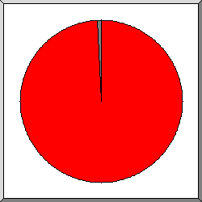
Поделено на сектора по количеству обращений.
http://star-poe.com.ua/
другое
Список ссылающихся сайтов, отсортировано по количеству обращений.
| запросы | сайт |
|---|---|
| 778 | http://star-poe.com.ua/ |
| 2 | https://www.star-poe.com.ua/ |
| 2 | http://www.star-poe.com.ua/ |
| 1 | https://www.google.com/ |
(Переход: Вверх | Основная Информация | Статистика по месяцам | Статистика по дням недели | Статистика по времени суток | Статистика по доменам | Статистика по организациям | Статистика по перенаправляющим ссылкам | Статистика отказов по ссылкам | Статистика по ссылающимся сайтам | Статистика по браузерам (подробная) | Статистика по браузерам (суммарная) | Статистика по операционным системам | Статистика по коду возврата | Статистика по размерам файлов | Статистика по типам файлов | Статистика по директориям | Статистика по запросам)
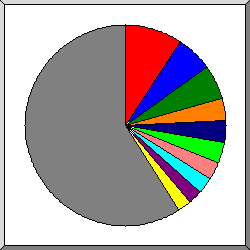
Поделено на сектора по количеству обращений к странице.
Mozilla/5.0 (Windows NT 10.0; Win64; x64) AppleWebKit/537.36 (KHTML, like Gecko) Chrome/111.0.0.0 Safari/537.36
Mozilla/5.0 (Windows NT 10.0; Win64; x64) AppleWebKit/537.36 (KHTML, like Gecko) Chrome/72.0.3626.119 Safari/537.36
Mozilla/5.0 (Macintosh; Intel Mac OS X 10_15_7) AppleWebKit/537.36 (KHTML, like Gecko) Chrome/110.0.0.0 Safari/537.36
Mozilla/5.0 (compatible; Googlebot/2.1; +http://www.google.com/bot.html)
Mozilla/5.0 (Linux; Android 11; ZTE Blade A51) AppleWebKit/537.36 (KHTML, like Gecko) Chrome/111.0.0.0 Mobile Safari/537.36
Mozilla/5.0 AppleWebKit/537.36 (KHTML, like Gecko; compatible; Googlebot/2.1; +http://www.google.com/bot.html) Chrome/111.0.5563.64 Safari/537.36
Mozilla/5.0 (iPhone; CPU iPhone OS 16_1_1 like Mac OS X) AppleWebKit/605.1.15 (KHTML, like Gecko) Version/16.1 Mobile/15E148 Safari/604.1
Mozilla/5.0 (Windows NT 10.0; Win64; x64)AppleWebKit/537.36 (KHTML, like Gecko) Chrome/66.0.3359.181 Safari/537.36
Mozilla/5.0 (Macintosh; Intel Mac OS X 10_14_6) AppleWebKit/537.36 (KHTML, like Gecko) Chrome/76.0.3809.132 Safari/537.36
Mozilla/5.0 (Windows NT 10.0; Win64; x64) AppleWebKit/537.36 (KHTML, like Gecko) Chrome/71.0.3542.0 Safari/537.36
другое
Показано первые 40 браузеров - по количеству обращений к странице, отсортировано по количеству обращений к странице.
| запросы | страниц | браузер |
|---|---|---|
| 112 | 13 | Mozilla/5.0 (Windows NT 10.0; Win64; x64) AppleWebKit/537.36 (KHTML, like Gecko) Chrome/111.0.0.0 Safari/537.36 |
| 63 | 8 | Mozilla/5.0 (Windows NT 10.0; Win64; x64) AppleWebKit/537.36 (KHTML, like Gecko) Chrome/72.0.3626.119 Safari/537.36 |
| 24 | 7 | Mozilla/5.0 (Macintosh; Intel Mac OS X 10_15_7) AppleWebKit/537.36 (KHTML, like Gecko) Chrome/110.0.0.0 Safari/537.36 |
| 10 | 7 | Mozilla/5.0 (compatible; Googlebot/2.1; +http://www.google.com/bot.html) |
| 60 | 7 | Mozilla/5.0 (Linux; Android 11; ZTE Blade A51) AppleWebKit/537.36 (KHTML, like Gecko) Chrome/111.0.0.0 Mobile Safari/537.36 |
| 35 | 6 | Mozilla/5.0 AppleWebKit/537.36 (KHTML, like Gecko; compatible; Googlebot/2.1; +http://www.google.com/bot.html) Chrome/111.0.5563.64 Safari/537.36 |
| 88 | 6 | Mozilla/5.0 (iPhone; CPU iPhone OS 16_1_1 like Mac OS X) AppleWebKit/605.1.15 (KHTML, like Gecko) Version/16.1 Mobile/15E148 Safari/604.1 |
| 5 | 5 | Mozilla/5.0 (Windows NT 10.0; Win64; x64)AppleWebKit/537.36 (KHTML, like Gecko) Chrome/66.0.3359.181 Safari/537.36 |
| 5 | 5 | Mozilla/5.0 (Macintosh; Intel Mac OS X 10_14_6) AppleWebKit/537.36 (KHTML, like Gecko) Chrome/76.0.3809.132 Safari/537.36 |
| 5 | 5 | Mozilla/5.0 (Windows NT 10.0; Win64; x64) AppleWebKit/537.36 (KHTML, like Gecko) Chrome/71.0.3542.0 Safari/537.36 |
| 32 | 4 | Mozilla/5.0 (Linux; Android 6.0.1; Nexus 5X Build/MMB29P) AppleWebKit/537.36 (KHTML, like Gecko) Chrome/111.0.5563.64 Mobile Safari/537.36 (compatible; Googlebot/2.1; +http://www.google.com/bot.html) |
| 4 | 4 | Mozilla/5.0 (compatible; Google-Site-Verification/1.0) |
| 3 | 3 | curl/7.29.0 |
| 3 | 3 | Mozilla/5.0 (Linux; Android 6.0.1; Nexus 5X Build/MMB29P) AppleWebKit/537.36 (KHTML, like Gecko) Chrome/99.0.4844.84 Mobile Safari/537.36 (compatible; Googlebot/2.1; +http://www.google.com/bot.html) |
| 3 | 3 | Go-http-client/1.1 |
| 6 | 3 | Mozilla/5.0 (compatible; CensysInspect/1.1; +https://about.censys.io/) |
| 18 | 2 | Mozilla/5.0 (X11; Linux x86_64) AppleWebKit/537.36 (KHTML, like Gecko) Chrome/108.0.5359.125 Safari/537.36 |
| 4 | 2 | Mozilla/5.0 (Windows NT 10.0; Win64; x64) AppleWebKit/537.36 (KHTML, like Gecko) Chrome/94.0.4606.61 Safari/537.36 |
| 3 | 2 | Mozilla/5.0 (Windows NT 10.0; Win64; x64) AppleWebKit/537.36 (KHTML, like Gecko; compatible; BW/1.1; bit.ly/3eZNDnO; 9e1a949f2d) Chrome/84.0.4147.105 Safari/537.36 |
| 28 | 2 | Mozilla/5.0 (Windows NT 10.0; Win64; x64) AppleWebKit/537.36 (KHTML, like Gecko) Chrome/79.0.3945.79 Safari/537.36 |
| 28 | 2 | Mozilla/5.0 (Windows NT 10.0; WOW64) AppleWebKit/537.36 (KHTML, like Gecko) Chrome/110.0.0.0 Safari/537.36 |
| 30 | 2 | Mozilla/5.0 (iPhone; CPU iPhone OS 16_0 like Mac OS X) AppleWebKit/605.1.15 (KHTML, like Gecko) CriOS/99.0.4844.47 Mobile/15E148 Safari/604.1 |
| 4 | 2 | Mozilla/5.0 (X11; Linux x86_64) AppleWebKit/537.36 (KHTML, like Gecko) Chrome/83.0.4103.97 Safari/537.36 |
| 29 | 2 | Mozilla/5.0 (X11; Linux x86_64) AppleWebKit/537.36 (KHTML, like Gecko) HeadlessChrome/91.0.4472.77 Safari/537.36 |
| 2 | 2 | Mozilla/5.0 AppleWebKit/537.36 (KHTML, like Gecko) Chrome/74.0.3729.131 Safari/537.36 |
| 31 | 2 | Mozilla/5.0 (X11; Linux x86_64) AppleWebKit/537.36 (KHTML, like Gecko) Chrome/111.0.0.0 Safari/537.36 |
| 2 | 2 | Mozilla/5.0 (compatible; InternetMeasurement/1.0; +https://internet-measurement.com/) |
| 30 | 2 | Mozilla/5.0 (Linux; Android 10; Redmi Note 9 Pro) AppleWebKit/537.36 (KHTML, like Gecko) Chrome/111.0.0.0 Mobile Safari/537.36 |
| 28 | 2 | Mozilla/5.0 (X11; Linux x86_64) AppleWebKit/537.36 (KHTML, like Gecko) HeadlessChrome/110.0.5481.177 Safari/537.36 |
| 42 | 2 | CheckMarkNetwork/1.0 (+http://www.checkmarknetwork.com/spider.html) |
| 4 | 2 | Mozilla/5.0 (Macintosh; Intel Mac OS X 10_15_7) AppleWebKit/537.36 (KHTML, like Gecko) Chrome/107.0.0.0 Safari/537.36 |
| 1 | 1 | Mozilla/5.0 (X11; Linux x86_64) AppleWebKit/570.50 (KHTML, like Gecko) Chrome/64.0.2689 Safari/537.36 |
| 1 | 1 | Mozilla/5.0 (Windows NT 7_0_2; Win64; x64) AppleWebKit/573.49 (KHTML, like Gecko) Chrome/102.0.2778 Safari/537.36 |
| 1 | 1 | Mozilla/5.0 (Linux; Android 6.0.1; Nexus 5X Build/MMB29P) AppleWebKit/537.36 (KHTML, like Gecko) Chrome/111.0.5563.110 Mobile Safari/537.36 (compatible; Googlebot/2.1; +http://www.google.com/bot.html) |
| 1 | 1 | Mozilla/5.0 (Linux; Android 6.0; HTC One M9 Build/MRA01259) AppleWebKit/537.36 (KHTML, like Gecko) Chrome/52.0.8607.98 Mobile Safari/537.3 |
| 1 | 1 | Mozilla/5.0 (Windows NT 10.0; Win64; x64) AppleWebKit/537.36 (KHTML, like Gecko) Chrome/86.0.4240.111 Safari/537.36 Edg/86.0.622.51 |
| 1 | 1 | Mozilla/5.0 (X11; Linux x86_64) AppleWebKit/537.48 (KHTML, like Gecko) Chrome/94.0.2649 Safari/537.36 |
| 1 | 1 | Mozilla/5.0 (MSIE 10.0; Windows NT 6.1; Trident/5.0) |
| 1 | 1 | Mozilla/5.0 (Linux; Android 5.0.1; Nexus 10 Build/LMY47D) AppleWebKit/537.36 (KHTML, like Gecko) Chrome/37.0.2062.124 Safari/537.22 |
| 1 | 1 | Mozilla/5.0 (X11; Linux x86_64) AppleWebKit/537.36 (KHTML, like Gecko) Chrome/76.0.3809.100 Safari/537.36 |
| 290 | 15 | [не распознано: 126 браузеров] |
(Переход: Вверх | Основная Информация | Статистика по месяцам | Статистика по дням недели | Статистика по времени суток | Статистика по доменам | Статистика по организациям | Статистика по перенаправляющим ссылкам | Статистика отказов по ссылкам | Статистика по ссылающимся сайтам | Статистика по браузерам (подробная) | Статистика по браузерам (суммарная) | Статистика по операционным системам | Статистика по коду возврата | Статистика по размерам файлов | Статистика по типам файлов | Статистика по директориям | Статистика по запросам)
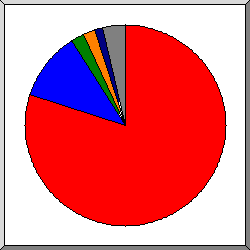
Поделено на сектора по количеству обращений к странице.
Safari
Netscape (compatible)
curl
Go-http-client
Firefox
CheckMarkNetwork
другое
Список браузеров на которые приходиться, как минимум 1 обращение к странице, отсортировано по количеству обращений к странице.
| N | запросы | страниц | браузер |
|---|---|---|---|
| 1 | 812 | 114 | Safari |
| 692 | 106 | Safari/537 | |
| 118 | 8 | Safari/604 | |
| 2 | 23 | 17 | Netscape (compatible) |
| 3 | 3 | 3 | curl |
| 3 | 3 | curl/7 | |
| 4 | 3 | 3 | Go-http-client |
| 3 | 3 | Go-http-client/1 | |
| 5 | 3 | 2 | Firefox |
| 1 | 1 | Firefox/49 | |
| 1 | 1 | Firefox/110 | |
| 6 | 42 | 2 | CheckMarkNetwork |
| 42 | 2 | CheckMarkNetwork/1 | |
| 7 | 27 | 1 | Mozilla |
| 8 | 5 | 1 | MSIE |
| 4 | 1 | MSIE/10 | |
| 122 | 0 | [не распознано: 4 браузеров] |
(Переход: Вверх | Основная Информация | Статистика по месяцам | Статистика по дням недели | Статистика по времени суток | Статистика по доменам | Статистика по организациям | Статистика по перенаправляющим ссылкам | Статистика отказов по ссылкам | Статистика по ссылающимся сайтам | Статистика по браузерам (подробная) | Статистика по браузерам (суммарная) | Статистика по операционным системам | Статистика по коду возврата | Статистика по размерам файлов | Статистика по типам файлов | Статистика по директориям | Статистика по запросам)
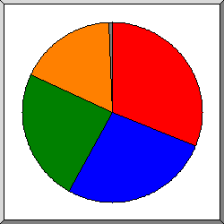
Поделено на сектора по количеству обращений к странице.
Windows
Unix
Неизвестная ОС
Macintosh
роботы
Список операционных систем, отсортировано по количеству обращений к странице.
| N | запросы | страниц | ОС |
|---|---|---|---|
| 1 | 349 | 50 | Windows |
| 283 | 44 | Windows NT | |
| 63 | 6 | Неизвестная Windows-система | |
| 3 | 0 | Windows XP | |
| 2 | 284 | 34 | Unix |
| 283 | 33 | Linux | |
| 1 | 1 | Другие Unix-системы | |
| 3 | 181 | 31 | Неизвестная ОС |
| 4 | 178 | 26 | Macintosh |
| 5 | 48 | 2 | роботы |
(Переход: Вверх | Основная Информация | Статистика по месяцам | Статистика по дням недели | Статистика по времени суток | Статистика по доменам | Статистика по организациям | Статистика по перенаправляющим ссылкам | Статистика отказов по ссылкам | Статистика по ссылающимся сайтам | Статистика по браузерам (подробная) | Статистика по браузерам (суммарная) | Статистика по операционным системам | Статистика по коду возврата | Статистика по размерам файлов | Статистика по типам файлов | Статистика по директориям | Статистика по запросам)
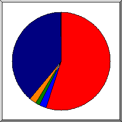
Поделено на сектора по количеству обращений.
200 OK
301 Document moved permanently
302 Document found elsewhere
404 Document not found
другое
Список кодов возврата, отсортированный по порядковым номерам.
| запросы | код статус |
|---|---|
| 1036 | 200 OK |
| 75 | 301 Document moved permanently |
| 38 | 302 Document found elsewhere |
| 5 | 304 Not modified since last retrieval |
| 1878 | 404 Document not found |
(Переход: Вверх | Основная Информация | Статистика по месяцам | Статистика по дням недели | Статистика по времени суток | Статистика по доменам | Статистика по организациям | Статистика по перенаправляющим ссылкам | Статистика отказов по ссылкам | Статистика по ссылающимся сайтам | Статистика по браузерам (подробная) | Статистика по браузерам (суммарная) | Статистика по операционным системам | Статистика по коду возврата | Статистика по размерам файлов | Статистика по типам файлов | Статистика по директориям | Статистика по запросам)
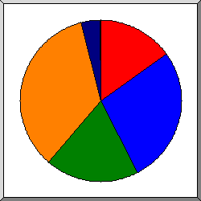
Поделено на сектора по количеству обращений.
0
101B- 1kB
1kB- 10kB
10kB-100kB
100kB- 1MB
другое
| размер | запросы | %байт |
|---|---|---|
| 0 | 124 | |
| 1B- 10B | 0 | |
| 11B- 100B | 2 | |
| 101B- 1kB | 199 | 0,45% |
| 1kB- 10kB | 272 | 3,75% |
| 10kB-100kB | 406 | 66,73% |
| 100kB- 1MB | 38 | 29,07% |
(Переход: Вверх | Основная Информация | Статистика по месяцам | Статистика по дням недели | Статистика по времени суток | Статистика по доменам | Статистика по организациям | Статистика по перенаправляющим ссылкам | Статистика отказов по ссылкам | Статистика по ссылающимся сайтам | Статистика по браузерам (подробная) | Статистика по браузерам (суммарная) | Статистика по операционным системам | Статистика по коду возврата | Статистика по размерам файлов | Статистика по типам файлов | Статистика по директориям | Статистика по запросам)
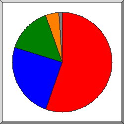
Поделено на сектора по суммарному трафику.
.css [Cascading Style Sheets]
[директории]
.js [JavaScript code]
.woff2
другое
Список расширений на которые приходиться, как минимум 0,1% трафика, отсортировано по суммарному трафику.
| запросы | %байт | расширение |
|---|---|---|
| 256 | 55,28% | .css [Cascading Style Sheets] |
| 142 | 21,20% | [директории] |
| 437 | 18,10% | .js [JavaScript code] |
| 18 | 4,46% | .woff2 |
| 32 | 0,46% | .png [PNG graphics] |
| 1 | 0,36% | .woff |
| 155 | 0,13% | [не распознано: 5 расширений] |
(Переход: Вверх | Основная Информация | Статистика по месяцам | Статистика по дням недели | Статистика по времени суток | Статистика по доменам | Статистика по организациям | Статистика по перенаправляющим ссылкам | Статистика отказов по ссылкам | Статистика по ссылающимся сайтам | Статистика по браузерам (подробная) | Статистика по браузерам (суммарная) | Статистика по операционным системам | Статистика по коду возврата | Статистика по размерам файлов | Статистика по типам файлов | Статистика по директориям | Статистика по запросам)
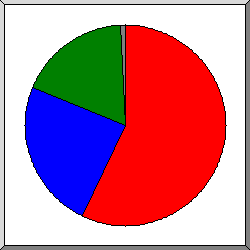
Поделено на сектора по суммарному трафику.
/wp-content/
/wp-includes/
[корневой каталог]
другое
Список директорий на которые приходиться, как минимум 0,01% трафика, отсортировано по суммарному трафику.
| запросы | %байт | директория |
|---|---|---|
| 601 | 58,55% | /wp-content/ |
| 163 | 20,23% | /wp-includes/ |
| 263 | 20,01% | [корневой каталог] |
| 3 | 0,42% | /shop/ |
| 2 | 0,37% | /google6fbdff65a22a7a50.html/ |
| 2 | 0,20% | /blog/ |
| 2 | 0,20% | /2023/ |
| 4 | 0,01% | http:// |
| 1 | [не распознано: 1 директория] |
(Переход: Вверх | Основная Информация | Статистика по месяцам | Статистика по дням недели | Статистика по времени суток | Статистика по доменам | Статистика по организациям | Статистика по перенаправляющим ссылкам | Статистика отказов по ссылкам | Статистика по ссылающимся сайтам | Статистика по браузерам (подробная) | Статистика по браузерам (суммарная) | Статистика по операционным системам | Статистика по коду возврата | Статистика по размерам файлов | Статистика по типам файлов | Статистика по директориям | Статистика по запросам)
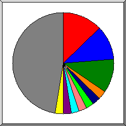
Поделено на сектора по количеству обращений.
/
/wp-cron.php
/wp-content/plugins/woocommerce/assets/js/js-cookie/js.cookie.min.js
/wp-content/plugins/woocommerce/assets/js/jquery-blockui/jquery.blockUI.min.js
/wp-content/plugins/woocommerce/assets/js/frontend/add-to-cart.min.js
/wp-content/plugins/woocommerce/assets/js/frontend/cart-fragments.min.js
/wp-content/plugins/woocommerce/assets/js/frontend/woocommerce.min.js
/wp-includes/images/w-logo-blue-white-bg.png
/wp-includes/js/jquery/jquery.min.js
/wp-includes/js/jquery/jquery-migrate.min.js
другое
Список файлов на которые приходиться, как минимум 20 запросов, отсортировано по количеству обращений.
| запросы | %байт | последнее время | файл |
|---|---|---|---|
| 132 | 20,00% | 31 мар 23 06:22 | / |
| 34 | 0,11% | 30 мар 23 19:38 | /?wc-ajax=get_refreshed_fragments |
| 112 | 31 мар 23 06:22 | /wp-cron.php | |
| 34 | 0,22% | 30 мар 23 19:38 | /wp-content/plugins/woocommerce/assets/js/js-cookie/js.cookie.min.js |
| 28 | 0,18% | 24 мар 23 02:17 | /wp-content/plugins/woocommerce/assets/js/js-cookie/js.cookie.min.js?ver=2.1.4-wc.7.5.0 |
| 34 | 1,13% | 30 мар 23 19:38 | /wp-content/plugins/woocommerce/assets/js/jquery-blockui/jquery.blockUI.min.js |
| 27 | 0,90% | 24 мар 23 02:17 | /wp-content/plugins/woocommerce/assets/js/jquery-blockui/jquery.blockUI.min.js?ver=2.7.0-wc.7.5.0 |
| 33 | 0,39% | 30 мар 23 19:38 | /wp-content/plugins/woocommerce/assets/js/frontend/add-to-cart.min.js |
| 27 | 0,32% | 24 мар 23 02:17 | /wp-content/plugins/woocommerce/assets/js/frontend/add-to-cart.min.js?ver=7.5.0 |
| 33 | 0,38% | 30 мар 23 19:38 | /wp-content/plugins/woocommerce/assets/js/frontend/cart-fragments.min.js |
| 27 | 0,31% | 24 мар 23 02:17 | /wp-content/plugins/woocommerce/assets/js/frontend/cart-fragments.min.js?ver=7.5.0 |
| 33 | 0,25% | 30 мар 23 19:38 | /wp-content/plugins/woocommerce/assets/js/frontend/woocommerce.min.js |
| 27 | 0,20% | 24 мар 23 02:17 | /wp-content/plugins/woocommerce/assets/js/frontend/woocommerce.min.js?ver=7.5.0 |
| 32 | 0,46% | 30 мар 23 19:38 | /wp-includes/images/w-logo-blue-white-bg.png |
| 32 | 10,05% | 30 мар 23 19:38 | /wp-includes/js/jquery/jquery.min.js |
| 30 | 9,42% | 28 мар 23 22:07 | /wp-includes/js/jquery/jquery.min.js?ver=3.6.1 |
| 31 | 1,23% | 30 мар 23 19:38 | /wp-includes/js/jquery/jquery-migrate.min.js |
| 29 | 1,14% | 28 мар 23 22:07 | /wp-includes/js/jquery/jquery-migrate.min.js?ver=3.3.2 |
| 30 | 0,08% | 30 мар 23 19:38 | /wp-content/themes/storefront/assets/js/footer.min.js |
| 30 | 0,08% | 30 мар 23 19:38 | /wp-content/themes/storefront/assets/js/footer.min.js?ver=4.2.0 |
| 30 | 1,10% | 30 мар 23 19:38 | /wp-content/plugins/contact-form-7/includes/swv/js/index.js |
| 24 | 0,89% | 24 мар 23 02:17 | /wp-content/plugins/contact-form-7/includes/swv/js/index.js?ver=5.7.4 |
| 30 | 1,36% | 30 мар 23 19:38 | /wp-content/plugins/contact-form-7/includes/js/index.js |
| 24 | 1,09% | 24 мар 23 02:17 | /wp-content/plugins/contact-form-7/includes/js/index.js?ver=5.7.4 |
| 30 | 0,31% | 30 мар 23 19:38 | /wp-content/themes/storefront/assets/js/navigation.min.js |
| 30 | 0,31% | 30 мар 23 19:38 | /wp-content/themes/storefront/assets/js/navigation.min.js?ver=4.2.0 |
| 30 | 0,05% | 30 мар 23 19:38 | /wp-content/themes/storefront/assets/js/woocommerce/header-cart.min.js |
| 30 | 0,05% | 30 мар 23 19:38 | /wp-content/themes/storefront/assets/js/woocommerce/header-cart.min.js?ver=4.2.0 |
| 29 | 0,07% | 30 мар 23 19:38 | /wp-content/plugins/woocommerce-menu-bar-cart/assets/js/wpmenucart-ajax-assist.min.js |
| 26 | 0,06% | 28 мар 23 22:07 | /wp-content/plugins/woocommerce-menu-bar-cart/assets/js/wpmenucart-ajax-assist.min.js?ver=2.13.1 |
| 24 | 21,75% | 30 мар 23 19:38 | /wp-content/plugins/woocommerce/packages/woocommerce-blocks/build/wc-blocks-style.css |
| 19 | 17,22% | 24 мар 23 02:17 | /wp-content/plugins/woocommerce/packages/woocommerce-blocks/build/wc-blocks-style.css?ver=9.6.5 |
| 24 | 0,88% | 30 мар 23 19:38 | /wp-content/plugins/woocommerce/packages/woocommerce-blocks/build/wc-blocks-vendors-style.css |
| 19 | 0,69% | 24 мар 23 02:17 | /wp-content/plugins/woocommerce/packages/woocommerce-blocks/build/wc-blocks-vendors-style.css?ver=9.6.5 |
| 22 | 0,07% | 30 мар 23 19:38 | /wp-content/plugins/woocommerce-menu-bar-cart/assets/css/wpmenucart-main.min.css |
| 19 | 0,06% | 28 мар 23 22:07 | /wp-content/plugins/woocommerce-menu-bar-cart/assets/css/wpmenucart-main.min.css?ver=2.13.1 |
| 21 | 4,31% | 30 мар 23 19:38 | /wp-content/themes/storefront/assets/css/woocommerce/woocommerce.css |
| 21 | 4,31% | 30 мар 23 19:38 | /wp-content/themes/storefront/assets/css/woocommerce/woocommerce.css?ver=4.2.0 |
| 21 | 5,90% | 30 мар 23 19:38 | /wp-content/themes/storefront/assets/css/base/icons.css |
| 21 | 5,90% | 30 мар 23 19:38 | /wp-content/themes/storefront/assets/css/base/icons.css?ver=4.2.0 |
| 21 | 0,21% | 30 мар 23 19:38 | /wp-content/plugins/contact-form-7/includes/css/styles.css |
| 16 | 0,16% | 24 мар 23 02:17 | /wp-content/plugins/contact-form-7/includes/css/styles.css?ver=5.7.4 |
| 21 | 1,37% | 30 мар 23 19:38 | /wp-includes/js/wp-emoji-release.min.js |
| 20 | 1,30% | 28 мар 23 22:07 | /wp-includes/js/wp-emoji-release.min.js?ver=6.1.1 |
| 21 | 7,00% | 30 мар 23 19:38 | /wp-includes/css/dist/block-library/style.min.css |
| 19 | 6,32% | 28 мар 23 22:07 | /wp-includes/css/dist/block-library/style.min.css?ver=6.1.1 |
| 21 | 3,16% | 30 мар 23 19:38 | /wp-content/themes/storefront/assets/css/base/gutenberg-blocks.css |
| 21 | 3,16% | 30 мар 23 19:38 | /wp-content/themes/storefront/assets/css/base/gutenberg-blocks.css?ver=4.2.0 |
| 21 | 2,98% | 30 мар 23 19:38 | /wp-content/themes/storefront/style.css |
| 21 | 2,98% | 30 мар 23 19:38 | /wp-content/themes/storefront/style.css?ver=4.2.0 |
| 20 | 0,02% | 30 мар 23 19:38 | /wp-includes/css/classic-themes.min.css |
| 18 | 0,01% | 28 мар 23 22:07 | /wp-includes/css/classic-themes.min.css?ver=1 |
| 119 | 15,27% | 31 мар 23 06:22 | [не распознано: 24 файлов] |